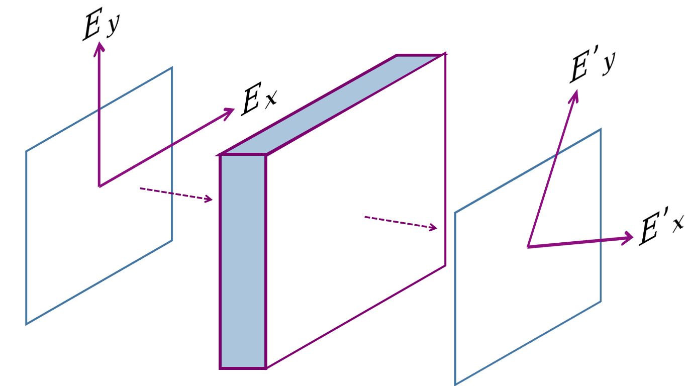

Objetivo Geral: Resolver Equações Diferenciais de Primeira Ordem.
Objetivo Especifico: Usar o Método de Euler com valores escalares e matriciais, para mostrar sua generalidade. No caso de equações diferenciais de primeira ordem, a solução típica em Física é uma exponencial, e por isso o conceito de Exponencial Matricial surge naturalmente, como é um cálculo laborioso, ferramentas simbólicas são grades facilitadoras. Finalmente, a visualização de Equações Diferenciais são melhor expressadas com campos de direções, produzidas em um computador com gráfico chamados quiver.
Conteúdo: Lei de Beer-Lambert; Método de Euler; Matrizes de Mueller; Exponencial de Matriz; Cálculo Simbólico; Equação de Transferência Radiativa; Quiver;
O capítulo anterior mostrou que o espectro de radiação solar não é perfeito devido a efeitos de absorção, de certas frequências, pela atmosfera terrestre. Isso acontece em todo o universo, e ao olhar para as janelas de frequências certas, podemos ver o que esta escondido atrás de uma atmosfera ou de um nuvem. O Telescópio James Webb é um ótimo exemplo, ele foi criado para ter imagens no infra vermelho, justamente pois as nuvens inter estelares tem menor espalhamento nessa região do espectro eletromagnético.
Esse curso de Física Computacional é direcionado a alunos em anos inciais da graduação, logo, não posso apresentar um modelo matemático (de clássica ou quântica avançadas) para encontrar frequências de ressonâncias, pois só traria frustrações ao leitor. No entanto, podemos aprender alguns conceitos básicos que são correlatos a espalhamento, e cuja matemática não é complexa, são eles absorção e emissão.
4.1 Lei de Beer-Lambert
Em nosso contexto, de luz solar atravessando a atmosfera terrestre, absorção de energia significa que as nuvens e gases da atmosfera vão absorver energia e transforma-lá, seja em energia térmica (fazendo moléculas se movimentarem ou vibrarem), seja em espalhamento (energia é absorvida pela nuvem, e é reemitida em luz). Contudo, não sabemos como quantificar a atenuação de um feixe de luz atravessando uma nuvem.
Absorção é um processo de ‘perda’ de energia do sistema, por isso o decaimento é diferente da atenuação sonora, vista no Projeto 2, cujo decaimento era quadrático, \(1/r^2\), motivada pela conservação de energia no espaço. Faremos um modelo de atenuação por absorção baseado em ideias simples de proporcionalidade, e descobriremos que a intensidade luminosa tem decaimento exponencial, \(e^{-r}\). O processo de modelagem que você irá ler é importante, pois o mecanismo se repete em outros contextos da Física.
Imagine uma nuvem de densidade \(n\), e formato bem definido, de largura \(dx\) e área \(A\), como representado na Figure XXX. Como cada molécula interage com a luz solar \(I_0\), precismos quantificar essa interação com um número, e a seção de choque \(\sigma\) faz exatamente isso. Nós imaginamos que cada átomos faz uma sombra sombra na luz incidente, vide Figure YYY, e portanto, a luz que atravessa o meio é atenuada. O valor exato de \(\sigma\) depende de qual frequência estamos trabalhando, para não esquecer disso, a notação utilizada será \(\sigma_{\omega}\). Na modelagem a seguir, vamos fixar nosso raciocínio para uma frequência \(\omega\) bem definida.
Vamos a modelagem:
Como a quantidade de luz atenuada foi \(dI\), e a luz inicial foi \(I\), a porcentagem de luz transmitida é \(dI/I\). Para não esquecermos que estamos trabalhando em uma frequência bem definida, adicionaremos o sub indice \(\omega\): \(dI_{\omega}/I_{\omega}\)
A quantidade de átomos que interagiram com a luz fornece qual a área da nuvem que ficou bloqueada (a área que criou a sombra). A quantidade de átomos é obtido da densidade e volume, \(N = n dx A\). A área total de interação é obtida com a seção de choque temos \(A_{choque} = \sigma n dx A\). Finalmente, a proporção de átomos que bloquearam a luz e de área total é \(A_{choque}/A = \sigma n dx\)
Fazendo igualdade de proporções, e colocando um sinal de negativo, para indicar que luz esta sendo perdida, obtemos a Lei de Lambert-Beer:
\[ \frac{dI_{\omega}(x)}{I_{\omega}} = - \sigma(\omega) n dx. \tag{4.1}\]
Se a seção de choque e a densidade forem constantes no espaço, a solução é uma exponencial, como prometido no começo do capítulo:
\[ I(x) = I_0e^{-\sigma n x}. \tag{4.2}\]
A integral \(\tau = \int_0^x \sigma(\omega) n dx' = \sigma n x\) tem vários nomes, aqui, será conhecida como Profundidade Óptica.
Derivadas numéricas em pontos não são surpresa, pois nós trabalhamos com elas no Capítulo 3. Infelizmente não podemos resolver a Equação Equação 4.1 apenas com nosso conhecimento atual, pois precisamos resolver numericamente uma equação que contenha derivadas. Aprender a resolver esse tipo de problema é essencial, por exemplo, para calcular a solução de \(I(x)\) com densidade variando no espaço, \(n(x)\).
Nesse primeiro projeto, vamos aprender resolver Equações Diferenciais Ordinárias, EDOs, com o Método de Euler.
Em essência: Você pega a definição de derivada, e a discretiza. Vamos resolver um problema genérico, e depois voltamos ao nosso contexto. Imagine que a função da intensidade \(I(x)\) pode ser escrita da seguinte forma: \[ \frac{dI}{dx} = f(I), \tag{4.3}\]
no qual \(f(I)\) é uma função que pode depender de mais parâmetros - porém eles são omitindo eles para facilitar a notação. Agora, lembremos da definição formal de uma derivada, que envolve limites, e isolamos o termo que se refere ao futuro:
\[ \begin{alignat*}{4} \frac{dI}{dx} &= f(I)\\ \lim_{\Delta x \to 0} \frac{\Delta I}{\Delta x} &= f(I)\\ \frac{\Delta I}{\Delta x} &\approx f(I)\\ \frac{I_{k+1} - I_{k}}{\Delta x} &= f(I)\\ I_{k+1} - I_{k} &= \Delta x\cdot f(I)\\ I_{k+1} &= I_{k} + \Delta x\cdot f(I) \end{alignat*} \]
Se você sabe a condição inicial, \(I_0\), e um intervalo \(\Delta x\), você consegue obter o valor de \(I_{n+1}\) iterativamente.
Altere a Equação Equação 4.1 para adquirir o formato da Equação Equação 4.3, descubra qual é a função \(f(I)\) e produza uma função em Julia
f(I,p), ondepé uma tupla com os valores de \(\sigma, n\).
Com \(I_0 = 10\), \(x \in [0,5]\), \(\Delta x = 10^{-2}\) e \(\sigma = n = 1\), obtenha a curva de \(I(x)\) com o Método de Euler.
Exiba seu resultado em uma figura e compare com o resultado exato, \(I(x) = I_0e^{-\sigma n x}\).
4.2 Luz com Polarização
O modelo da sessão anterior é uma grande simplificação da interação luz-matéria, o que não é necessariamente um defeito, com a Equação Equação 4.2} pode-se obter resultados rotineiros em um laboratório de Espectroscopia de Absorção. Nosso modelo simplificado também foi útil para você compreender o Método de Euler, que era o objetivo principal.
Uma situação que necessita levar em conta a polarização da luz é na área de Sensoriamento Remoto, uma vez que cristais de gelo dentro das nuvens, alteram a polarização do espectro eletromagnético, e interfere na imagens que um satélite produz. Vamos adicionar polarização ao nosso modelo para você ter um primeiro contato com Exponenciais de Matrizes - um tópico normalmente ensinado em Física Matemática ou Mecânica Quântica.
A Figura \(\ref{fig:fig_polarizacao}\) ilustra uma versão simplificada do problema. Um feixe de luz com polarização bem definida pelas direções \((E_x, E_y)\) atravessa um material, e altera sua polarização para outra direção.

Afim de descrever como a polarização é modificada, você precisa conhecer - apenas conheça o conceito, não precisa compreender os detalhes. novos conceitos, são eles Vetores de Stokes e Matrizes de Mueller. Vetores de Stokes são usados para representar muito mais que as 2 componentes \((E_x, E_y)\) da polarização, eles são vetores de 4 dimensões Connect:
\[ \vec{s} = \begin{bmatrix} E_xE_x^* + E_yE_y^* \\ E_xE_x^* - E_yE_y^* \\ E_xE_y^* + E_yE_x^* \\ i(E_xE_y^* - E_yE_x^*) \end{bmatrix}. \tag{4.4}\]
Se \(\vec{s}\) é a luz do sol, e \(\vec{s}'\) a luz que atravessou a nuvem, podemos relacioná-los com uma matriz \(M\):
\[ \vec{s}' = M\vec{s}. \tag{4.5}\]
A matriz \(M\) é a Matriz de Mueller, ela representa a física da interação luz-matéria, podendo ser medida em laboratório. Do ponto de vista teórico existem algumas matrizes de Mueller para casos especiais, o que nos leva a pergunta: Existe alguma matriz de Mueller para nosso problema? Queremos uma matriz que represente mudança de polarização com efeitos de absorção, e [Azzam 1978] já respondeu essa pergunta na década de 70.
No nosso projeto usaremos o formato da matriz bi-isotrópica apresentada em [Arteaga e Kahr 2019], onde cada em termo diferente de zero, inspirado em Azzam [1978], terá o fator de absorção \(\alpha = n(\omega)\sigma\), formando a matriz
\[ M = \begin{bmatrix} \alpha & 0 & 0 & \alpha \\ 0 & \alpha & \alpha & 0 \\ 0 & -\alpha & \alpha & 0 \\ \alpha & 0 & 0 & \alpha \end{bmatrix}. \tag{4.6}\]
Até o momento da escrita desse texto, não existia nenhum resultado para as palavras chaves “bi-isotropic ice” ou “bi-isotropic cloud”. Portanto, \(M\) ainda não possui equivalente físico, e essa matriz tem apenas finalidade didática.
Chegou o momento de botar em prática seus novos conhecimentos, misturamos a Equação 4.1 com a Equação 4.5} para obter nossa nova a equação diferencial: \[ \frac{d \vec{s}}{dx} = -Md\vec{s} \tag{4.7}\]
Com a Equação 4.4} e \(E_x = 0.5\) e \(E_y = 0.25i\) monte sua condição inicial \(s_0\).
Use \(\alpha = 1\) e crie a matriz de Mueller \(M\) seguindo Equação Equação 4.6.
Adapte os seus códigos do Método de Euler do exercício anterior, e resolva a Equação 4.7 no intervalo \(x \in [0,5]\).
Como o vetor \(\vec{s}\) tem 4 componentes, não é possível fazer um gráfico de 4-dimensões. Exiba todos os componente de forma sobreposta em uma figura que evolui ao longo do tempo, \(s_i \times t\).
solução analítica da intensidade da luz quando trabalhamos sem polarização, foi \(I(x) = I_0e^{-\sigma n x}\). Por analogia, a solução do problema atual seria \(s(x) = s_0e^{-Mx}\). Assuma que \(e^{-Mx}\) quer dizer que você deve calcular a função exponencial,
exp, de cada elemento da matriz \(A = -Mx\), e então calcule sua curva teórica.Compare com os resultados numéricos com os teóricos, e para a sua surpresa, o resultado teórico que esta errado.